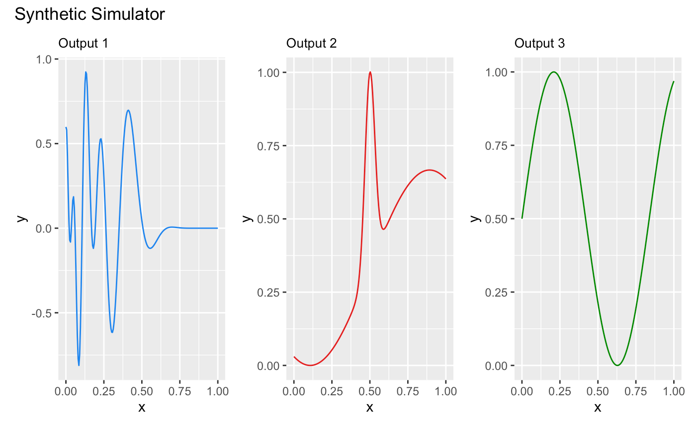
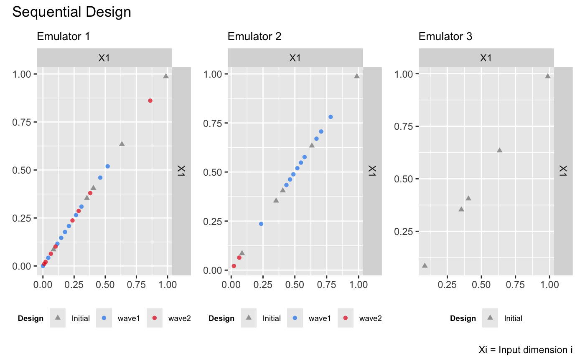
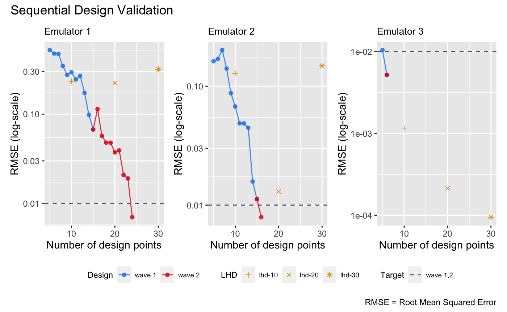

This vignette shows how to use the package to sequentially refine a bundle of DGP emulators, each of which emulates an output of a simulator.
Construct a synthetic simulator
We construct a synthetic simulator that has a one-dimensional input
between [0, 1] and a three-dimensional output.
f <- function(x) {
y1 = sin(30*((2*x-1)/2-0.4)^5)*cos(20*((2*x-1)/2-0.4))
y2 = 1/3*sin(2*(2*x - 1))+2/3*exp(-30*(2*(2*x-1))^2)+1/3
y3 = (sin(7.5*x)+1)/2
return(cbind(y1, y2, y3))
}Note that the function is defined in such a way that both its input,
x, and output are matrices. The following figure shows the
true functional forms of the three outputs of the simulator over
:
dense_x <- seq(0, 1, length = 200)
dense_y <- f(dense_x)
output1 <- data.frame('x' = dense_x, 'y' = dense_y[,1])
output2 <- data.frame('x' = dense_x, 'y' = dense_y[,2])
output3 <- data.frame('x' = dense_x, 'y' = dense_y[,3])
p1 <- ggplot(data = output1, aes(x = x, y = y)) + geom_line(color = 'dodgerblue2') + ggtitle('Output 1') + theme(plot.title = element_text(size = 10))
p2 <- ggplot(data = output2, aes(x = x, y = y)) + geom_line(color = '#E31A1C') + ggtitle('Output 2') + theme(plot.title = element_text(size = 10))
p3 <- ggplot(data = output3, aes(x = x, y = y)) + geom_line(color = 'green4') + ggtitle('Output 3') + theme(plot.title = element_text(size = 10))
wrap_plots(list(p1, p2, p3)) + plot_annotation(title = 'Synthetic Simulator')
We now specify a seed with set_seed() from the package
for reproducibility
set_seed(9999)and generate an initial design with 5 design points using a maximin Latin hypercube sampler:
X <- maximinLHS(5, 1)
Y <- f(X)We generate a validation dataset to track and stop the sequential design:
validate_x <- maximinLHS(200, 1)
validate_y <- f(validate_x)Construct a bundle of DGP emulators
Before we start the sequential design, we build three DGP emulators
that emulate the three outputs of the simulator f
independently:
m1 <- dgp(X, Y[,1], connect = F)## Auto-generating a 2-layered DGP structure ... done
## Initializing the DGP emulator ... done
## Training the DGP emulator:
## Iteration 500: Layer 2: 100%|██████████| 500/500 [00:01<00:00, 335.63it/s]
## Imputing ... done
m2 <- dgp(X, Y[,2], connect = F)## Auto-generating a 2-layered DGP structure ... done
## Initializing the DGP emulator ... done
## Training the DGP emulator:
## Iteration 500: Layer 2: 100%|██████████| 500/500 [00:01<00:00, 294.20it/s]
## Imputing ... done
m3 <- dgp(X, Y[,3])## Auto-generating a 2-layered DGP structure ... done
## Initializing the DGP emulator ... done
## Training the DGP emulator:
## Iteration 500: Layer 2: 100%|██████████| 500/500 [00:01<00:00, 387.69it/s]
## Imputing ... doneNote that we have the global connection turned off for the first two
DGP emulators because we found that this yields better emulation
performance. We then build a bundle of the three DGP emulators using
pack():
m <- pack(m1, m2, m3)Sequential design for the emulator bundle
To begin sequential design, we first specify the limit of each input:
lim <- c(0, 1)and set a target RMSE to stop the sequential design:
target <- 0.01Here we choose 0.01 because it is equivalent to
1% normalized error given that the ranges of both outputs
are [0,1]. We can set different targets for different
outputs, e.g., by setting
target <- c(0.005, 0.02, 0.01).
We start the first-wave of the sequential design with 10 steps:
# 1st wave of the sequential design with 10 steps
m <- design(m, N = 10, limits = lim, f = f, x_test = validate_x, y_test = validate_y, target = target)## Initializing ... done
## * RMSE: 0.383722, RMSE: 0.154689, RMSE: 0.008984
## Iteration 1:
## - Locating ... done
## * Next design point (Emulator1): 0.208133
## * Next design point (Emulator2): 0.235860
## * Next design point (Emulator3): None (target reached)
## - Updating and re-fitting ... done
## - Validating ... done
## * RMSE: 0.307165, RMSE: 0.154614, RMSE: 0.008984
##
## ...
##
## Iteration 10:
## - Locating ... done
## * Next design point (Emulator1): 0.309109
## * Next design point (Emulator2): 0.488460
## * Next design point (Emulator3): None (target reached)
## - Updating and re-fitting ... done
## - Validating ... done
## * RMSE: 0.096814, RMSE: 0.031681, RMSE: 0.008984
## Targets not reached for all emulators at the end of the sequential design.It can be seen that at the first step, the DGP emulator for the third
output has already reached the target, so no further refinements (i.e.,
additions of design points to the third DGP emulator) are performed for
the remaining steps. By the end of the first wave, the DGP emulators for
the first and second outputs have not yet reached the target. At this
point, we can proceed to a second wave by repeating the command above.
However, we demonstrate an alternative approach below, where we define
an aggregation function (applicable to all built-in method
functions of design()). This function aggregates criterion
scores across the three outputs, ensuring that the same design points
are added to all three emulators at each step, instead of selecting
different design points for each emulator. Using the aggregation
approach can be advantageous if the different outputs exhibit similar
behavior with respect to the input, as it reduces number of simulations
required at each iteration. However, if the outputs behave differently,
it may be more effective to add distinct design points to each emulator
to achieve lower errors more quickly.
We define the aggregation function g to compute a
weighted average of the scores:
g <- function(x, weight){
x[,1] <- x[,1]*weight[1]
x[,2] <- x[,2]*weight[2]
x[,3] <- x[,3]*weight[3]
return(rowSums(x))
}Since the third emulator has already reached the target, we assign zero weights to it and weights of 0.8 and 0.2 to the first and second emulators respectively:
weight <- c(0.8, 0.2, 0)We now pass both the aggregate function, g(), and its
weight argument to design() for a second wave
of the sequential design with a further 15 steps:
# 2nd wave with 15 steps
m <- design(m, N = 15, limits = lim, f = f, x_test = validate_x, y_test = validate_y, aggregate = g, target = 0.01, weight = weight)## Initializing ... done
## * RMSE: 0.096814, RMSE: 0.031681, RMSE: 0.008984
## Iteration 1:
## - Locating ... done
## * Next design point (Emulator1): 0.063719
## * Next design point (Emulator2): 0.063719
## * Next design point (Emulator3): None (target reached)
## - Updating and re-fitting ... done
## - Validating ... done
## * RMSE: 0.268437, RMSE: 0.030712, RMSE: 0.008984
## Iteration 2:
## - Locating ... done
## * Next design point (Emulator1): 0.021174
## * Next design point (Emulator2): 0.021174
## * Next design point (Emulator3): None (target reached)
## - Updating and re-fitting ... done
## - Validating ... done
## * RMSE: 0.091204, RMSE: 0.005310, RMSE: 0.008984
## Iteration 3:
## - Locating ... done
## * Next design point (Emulator1): 0.379801
## * Next design point (Emulator2): None (target reached)
## * Next design point (Emulator3): None (target reached)
## - Updating and re-fitting ... done
## - Validating ... done
## * RMSE: 0.242991, RMSE: 0.005310, RMSE: 0.008984
##
## ...
##
## Iteration 8:
## - Locating ... done
## * Next design point (Emulator1): 0.010541
## * Next design point (Emulator2): None (target reached)
## * Next design point (Emulator3): None (target reached)
## - Updating and re-fitting ... done
## - Validating ... done
## * RMSE: 0.009013, RMSE: 0.005310, RMSE: 0.008984
## Target reached! Sequential design stopped at step 8.The first and the second emulators reached the target after iteration
8 and 2 of the second wave, respectively. The sequential design points
of the three emulators can be plotted with draw():
draw(m, 'design')
The figure above shows that, for the first emulator, most of the design points are added below 0.5, while for the second emulator, the design points are concentrated around 0.5. For the third emulator, the resulting design is space-filling. These design point distributions align with the functional complexities of the three outputs. However, in the second wave, which uses the aggregation function, additional points are added below 0.5 for the second emulator due to the higher weight assigned to the first emulator. These points may not be necessary for the second output, as its functional behavior does not require further refinement in that region. This observation aligns with the earlier argument that using the aggregation function to add the same design points to outputs with differing behaviors may not always be effective.
Comparison to DGP emulators with space-filling designs
We build three independent DGP emulators for the three outputs with static space-filling Latin hypercube designs (LHD) of size 10, 20, and 30 respectively:
# DGP emulators with a LHD of size 10
X1 <- maximinLHS(10, 1)
Y1 <- f(X1)
m11 <- dgp(X1, Y1[,1], connect = F, verb = F)
m12 <- dgp(X1, Y1[,2], connect = F, verb = F)
m13 <- dgp(X1, Y1[,3], verb = F)
# DGP emulator with a LHD of size 20
X2 <- maximinLHS(20, 1)
Y2 <- f(X2)
m21 <- dgp(X2, Y2[,1], connect = F, verb = F)
m22 <- dgp(X2, Y2[,2], connect = F, verb = F)
m23 <- dgp(X2, Y2[,3], verb = F)
# DGP emulator with a LHD of size 30
X3 <- maximinLHS(30, 1)
Y3 <- f(X3)
m31 <- dgp(X3, Y3[,1], connect = F, verb = F)
m32 <- dgp(X3, Y3[,2], connect = F, verb = F)
m33 <- dgp(X3, Y3[,3], verb = F)We then extract their RMSEs
# validations of the first DGP emulator
m11 <- validate(m11, x_test = validate_x, y_test = validate_y[,1], verb = F)
m21 <- validate(m21, x_test = validate_x, y_test = validate_y[,1], verb = F)
m31 <- validate(m31, x_test = validate_x, y_test = validate_y[,1], verb = F)
rmse_static_1 <- data.frame('N' = c(10, 20, 30), 'rmse' = c(m11$oos$rmse, m21$oos$rmse, m31$oos$rmse), 'LHD' = c('lhd-10', 'lhd-20', 'lhd-30'))
# validations of the second DGP emulator
m12 <- validate(m12, x_test = validate_x, y_test = validate_y[,2], verb = F)
m22 <- validate(m22, x_test = validate_x, y_test = validate_y[,2], verb = F)
m32 <- validate(m32, x_test = validate_x, y_test = validate_y[,2], verb = F)
rmse_static_2 <- data.frame('N' = c(10, 20, 30), 'rmse' = c(m12$oos$rmse, m22$oos$rmse, m32$oos$rmse), 'LHD' = c('lhd-10', 'lhd-20', 'lhd-30'))
# # validations of the third DGP emulator
m13 <- validate(m13, x_test = validate_x, y_test = validate_y[,3], verb = F)
m23 <- validate(m23, x_test = validate_x, y_test = validate_y[,3], verb = F)
m33 <- validate(m33, x_test = validate_x, y_test = validate_y[,3], verb = F)
rmse_static_3 <- data.frame('N' = c(10, 20, 30), 'rmse' = c(m13$oos$rmse, m23$oos$rmse, m33$oos$rmse), 'LHD' = c('lhd-10', 'lhd-20', 'lhd-30'))and add them to the sequential design validation plot (in log-scale) for comparison:
p <- draw(m, type = 'rmse', log = T)
p[[1]] <- p[[1]] +
geom_point(data = rmse_static_1, mapping = aes(x = N, y = rmse, group = LHD, shape = LHD), color = '#E69F00', size = 1.5) +
scale_shape_manual(values = c(3, 4, 8))
p[[2]] <- p[[2]] +
geom_point(data = rmse_static_2, mapping = aes(x = N, y = rmse, group = LHD, shape = LHD), color = '#E69F00', size = 1.5) +
scale_shape_manual(values = c(3, 4, 8))
p[[3]] <- p[[3]] +
geom_point(data = rmse_static_3, mapping = aes(x = N, y = rmse, group = LHD, shape = LHD), color = '#E69F00', size = 1.5) +
scale_shape_manual(values = c(3, 4, 8))
p
It can be seen from the plot above that sequential design is more efficient than batch space-filling design, achieving similar RMSE with fat fewer design points, particularly for the first emulator in the bundle.
See also
See Sequential Design I for the sequential design and automatic structure simplification of a DGP emulator on a 2D simulator.